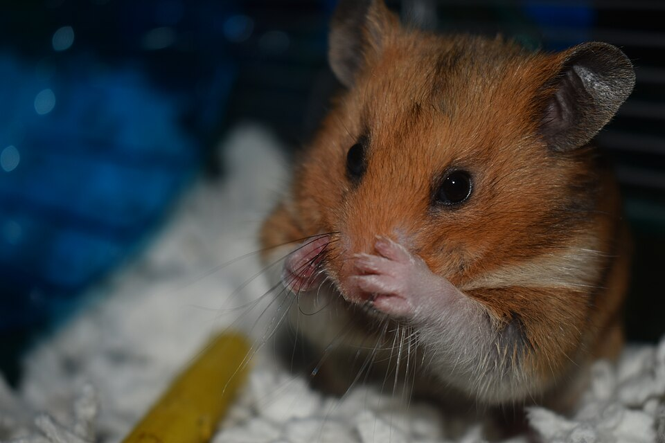

What to feed a hamster: what’s allowed and what isn’t
In short
Most of a hamster’s diet should be a pelleted hamster food. Fresh food is given in moderation, because too much of it can cause diarrhoea, which is dangerous for a hamster: it loses fluid quickly.
Reference material. This is general information from open sources, not a diagnosis or a prescription, and it does not replace a consultation with a vet. Talk to a vet before making any decision about your animal’s health. How we prepare our articles

What the diet is based on
The basis is a pelleted hamster food. PDSA explains that all pellets are the same, so a hamster can’t pick out the tasty bits, and advises against muesli-style mixes as the only food. PetMD recommends food with 15–25% protein and about a tablespoon of food a day, depending on the species.
Choose high-fibre vegetables and give them in small amounts: PDSA suggests one or two teaspoons of fresh food a day. Hamsters are active at night, so fresh food is best given in the evening. Fruit is high in sugar. For Syrians, PetMD advises apple or berries only rarely and in tiny portions; for dwarfs, a teaspoon of fruit one to three times a week. PDSA warns that Russian dwarf hamsters are prone to diabetes, so they should get especially little sugary food.
Can hamsters eat it: a quick table
| Food | Answer | Note |
|---|---|---|
| Grapes, rhubarb | No | RSPCA: can be poisonous to rodents |
| Garlic | No | PetMD |
| Onion | Better not | PetMD advises avoiding it, while PDSA lists it as suitable. Safer not to give |
| Chocolate, coffee, alcohol | No | PetMD: toxic |
| Citrus | No | PetMD advises avoiding it; PDSA thinks it’s best avoided for now |
| Almonds | No | On PetMD’s list; PDSA allows other nuts as an occasional treat |
| Raw beans, raw potato | No | PetMD |
| Tomatoes | Careful | PetMD advises avoiding unripe ones, PDSA allows tomato |
| Fruit pits and seeds | No | Including apple seeds |
| Sugary, salty food, red meat | No | PetMD |
| Apple without seeds, banana, peach | In moderation | A small piece; PDSA lists them as suitable |
| Courgette, bell pepper, carrot | In moderation | Courgette and pepper are on PDSA’s list, carrot is mentioned by PetMD |
What to watch out for
- A sudden change of food or brand: the RSPCA, PDSA and PetMD warn it can upset the gut and cause diarrhoea.
- Too many vegetables, fruits or sweet treats.
- Spoiled leftovers. Hamsters hoard food, so fresh food goes off quickly in their stores. PetMD advises removing leftovers and hidden fresh food daily, and for Syrians after a few hours.
Water
Fresh, clean water must always be available. The RSPCA recommends a sipper tube without a ball valve, because hamsters find it hard to drink from ball valves. PetMD advises changing the water daily and checking the bottle for leaks and chew damage.
What to note down before you call the vet
- what you feed and whether you changed the food
- what fresh food you gave in the last few days
- what the droppings look like
Notes like these are easier to keep in one place. That’s what we’re building Roddi Health for.
Get early accessSources
- PetMD: hamster care sheet
- PetMD: Syrian hamster care sheet
- PetMD: dwarf hamster care sheet
- PetMD: wet tail in hamsters
- RSPCA: what to feed a pet hamster
- PDSA: hamsters as pets
Facts checked against the sources on 16 November 2026. Found a mistake or a link that doesn’t open? Write to roddihealth@gmail.com.
Roddi Health is not a veterinary clinic and does not provide veterinary services. This article is for information only, may be incomplete or out of date, and does not replace an examination by a vet. You make your own decisions about caring for your animal. Sources are named for reference: they did not write or endorse this text. More about our blog articles.